문서 개요 · 메뉴 구성
Synapse-V 화면을 매일 쓰는 운영자와 관리자를 위한 기능 설명서입니다.
메뉴 하나가 한 장이고, 왼쪽 목록이나 키보드 ← →로 넘길 수 있습니다.
Synapse-V가 하는 일
백화점 각 시스템 서버에 설치한 수집기(에이전트)가 메트릭과 로그를 보냅니다. Synapse-V는 이 데이터를 계속 지켜보다가 이상이 생기면 알림을 만들고 Teams로 담당자를 부릅니다. 같은 시스템에서 30분 안에 이어진 알림은 한 인시던트(사건)로 묶입니다. 사건을 해결한 뒤 등록한 해결책은 승인을 거쳐 검색 자산이 되고, 다음에 비슷한 장애가 나면 AI 어시스턴트와 유사 검색이 이 기록을 찾아 줍니다.
메뉴 한눈에 보기
| 그룹 | 메뉴 | 이럴 때 씁니다 | 장 |
|---|---|---|---|
| AI | AI 어시스턴트 | "CRM 서버 오늘 CPU 어때?", "지난주 결제 장애 원인 정리해줘"처럼 말로 묻기 | 03 |
| 운영 | 대시보드 | 출근 직후 전체 시스템 상태를 한 번에 확인 | 04 · 05 |
| Grafana 대시보드 | 호스트·로그·DB 지표를 Grafana 패널로 자세히 보기 | 06 | |
| 장애 예측 | AI가 "곧 임계치에 닿을 것 같다"고 본 항목 확인 | 07 | |
| 알림 | 알림 이력 | 들어온 알림 조회 · 확인 처리 · 오탐 예외 등록 | 08 |
| 인시던트 | 사건 단위로 상태를 바꿔 가며 대응 · MTTR 측정 | 09 · 10 | |
| 해결책 관리 | 과거 해결책 검색, 승인 대기 건 감리 | 11 | |
| 분석 | 안정성 리포트 | 일·주·월 단위 시스템 안정성 요약 보기 | 12 |
| 유사 장애 검색 | 지금 증상과 비슷했던 과거 패턴 찾기 | 13 | |
| 관리 | 에이전트 관리 | 수집기 등록 · 설치 · 실행/중지 | 14 |
| CLI 배포 관리 | 운영 서버에 synapse 명령어 도구 배포 | 15 | |
| 시스템 관리 | 모니터링 대상 시스템, 서버 IP, 담당자, Teams 채널 설정 | 16 | |
| 담당자 관리 | 가입한 사용자를 알림 담당자로 지정 | 17 | |
| 계정 메뉴 | 내 프로필 · 관리자 메뉴 | 이름·비밀번호 변경, 사용자 승인, LLM·챗봇 설정 등 | 18 ~ 21 |
권한: 운영자와 관리자
가입 승인을 받은 계정은 운영자 또는 관리자 권한을 가집니다. 대부분의 메뉴는 두 권한이 똑같이 쓸 수 있고, 시스템·담당자·에이전트도 운영자가 등록하고 고칠 수 있습니다. 관리자만 쓸 수 있는 것은 아래뿐입니다.
- 계정 메뉴의 사용자 관리 · DevX AgentCode 관리 · 챗봇 도구 관리 · 벡터 상태 · 스케줄러 이력 · OAuth 클라이언트
- 해결책 관리의 해결책 감리 탭 (단, 해결책마다 지정된 승인자는 자기 건을 승인할 수 있습니다)
운영자가 관리자 전용 주소를 직접 열면 "관리자 권한이 필요합니다" 안내와 함께 대시보드로 돌아갑니다.
화면 캡처 안내
이 문서의 캡처는 로컬 개발 환경에 가상 데이터(CRM 시스템, 결제 시스템 등)를 넣고 찍었습니다. 실제 운영 화면과 수치·이름이 다르고, 수집기가 없는 환경이라 그래프가 비어 있는 캡처도 있습니다. 화면 배치와 버튼 이름은 운영과 같습니다.
로그인 · 사용자 신청
처음 쓰는 사람은 사용자 신청을 하고, 관리자가 승인하면 로그인할 수 있습니다.
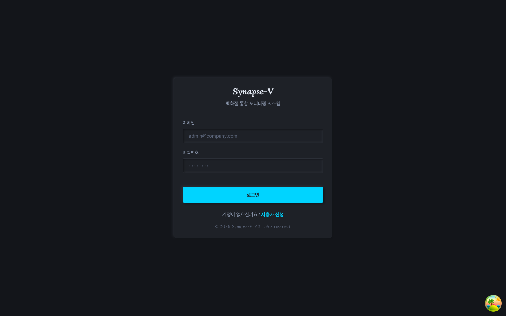
/login) — 이메일과 비밀번호를 넣고 로그인을 누릅니다. 아래 사용자 신청 링크가 가입 화면입니다.사용자 신청
- 로그인 화면 아래 사용자 신청을 누릅니다.
- 이름(2자 이상), 이메일, 비밀번호, 비밀번호 확인을 입력합니다. 비밀번호는 12자 이상이고 대문자와 숫자가 하나씩 들어가야 합니다.
- 등록 신청을 누르면 "관리자 승인 후 로그인 가능합니다" 화면이 나옵니다. 관리자에게 승인을 요청하십시오.
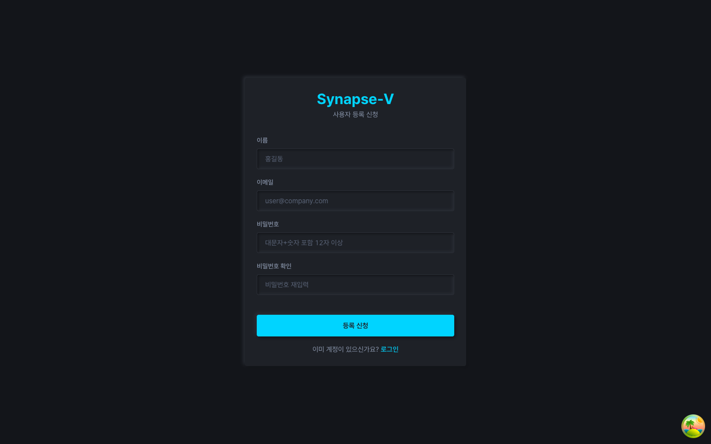
/register)로그인 오류 메시지
| 메시지 | 뜻 · 조치 |
|---|---|
| 이메일 또는 비밀번호가 올바르지 않습니다 | 입력값을 다시 확인합니다. |
| 관리자 승인 대기 중인 계정입니다 | 비밀번호 문제가 아닙니다. 관리자에게 승인을 요청합니다. |
| 비활성화된 계정입니다. 관리자에게 문의하세요 | 가입이 거부되었거나 관리자가 계정을 비활성화했습니다. |
| 이미 사용 중인 이메일입니다 | (신청 화면) 같은 이메일로 이미 신청했습니다. 로그인하거나 관리자에게 상태를 물어봅니다. |
보던 화면 주소가 기억되어 있어서, 다시 로그인하면 그 화면으로 돌아갑니다.
관리자가 OAuth 클라이언트로 등록한 사내 시스템은 Synapse 계정으로 로그인할 수 있습니다(21장). 이때 "다음 앱에 로그인합니다 — 시스템 이름" 화면이 뜨며, Synapse 이메일·비밀번호를 넣고 로그인하고 계속을 누르면 원래 시스템으로 돌아갑니다.
화면 구성 · 공통 기능
모든 메뉴가 같은 틀을 씁니다. 왼쪽 사이드바, 위쪽 검색·테마·로그아웃, 오른쪽 아래 AI 어시스턴트 버튼입니다.
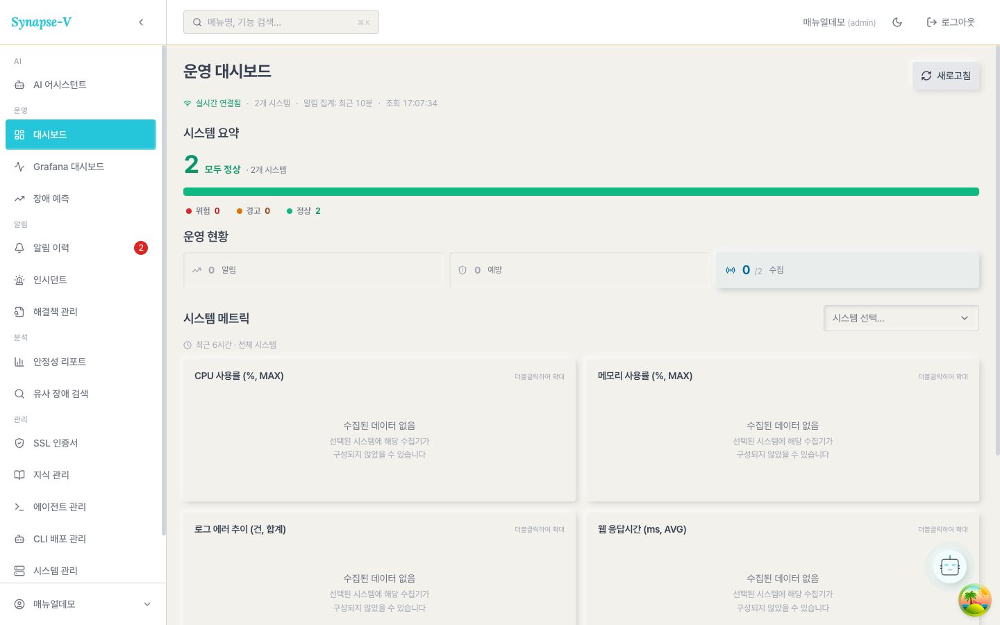
사이드바
- 접기/펴기 — 로고 옆
‹버튼으로 아이콘만 남길 수 있습니다. 접힌 상태에서는 아이콘에 마우스를 올리면 메뉴 이름이 보입니다. 새로고침하면 다시 펼쳐집니다. - 알림 이력 옆 빨간 숫자 — 아직 아무도 확인하지 않은 알림 수입니다(30초마다 갱신, 99 초과 시
99+). - 계정 메뉴 — 맨 아래 내 이름을 누르면 위로 펼쳐집니다. 내 프로필이 있고, 관리자에게는 관리자 메뉴 6개가 더 보입니다. 승인 대기 중인 가입자가 있으면 계정 아이콘에 빨간 점이 붙습니다.
메뉴 검색 (Ctrl+K / ⌘K)
어느 화면에서든 Ctrl+K(Mac은 ⌘K)를 누르면 위쪽 검색창에 커서가 갑니다. 메뉴 이름 일부를 치고 ↑ ↓로 고른 뒤 Enter로 이동합니다.
메뉴 이름만 찾는 창이고, 알림이나 시스템 같은 데이터는 검색하지 않습니다.
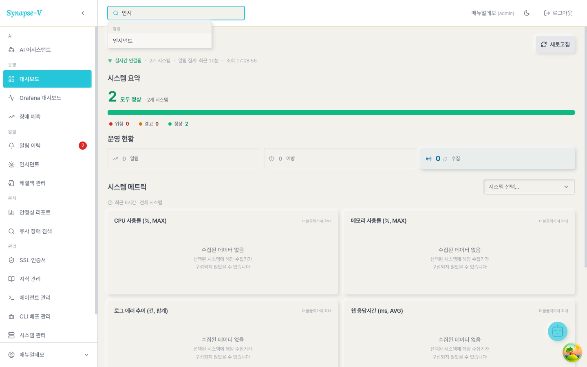
테마 전환
위쪽의 해/달 아이콘으로 다크·라이트 모드를 바꿉니다. 고른 값은 브라우저에 저장되어 다음 접속에도 유지됩니다. 처음 접속하면 다크 모드입니다.
Critical 경고 배너
아무도 확인하지 않은 Critical(위험) 알림이 1건 이상 있으면 화면 맨 위에 빨간 배너가 고정됩니다. "미확인 Critical 알림 N건 — 즉시 확인이 필요합니다". 배너를 누르면 위험·미확인 알림만 걸러진 알림 이력으로 갑니다. 오른쪽 X를 누르면 30분 동안 숨겨집니다.
AI 어시스턴트 버튼 (마스코트)
오른쪽 아래 마스코트를 누르면 어느 화면에서든 AI 어시스턴트 패널이 열립니다(03장). 패널은 지금 보고 있는 화면을 알고 있어서, 인시던트 상세에서 열면 그 인시던트에 맞는 질문을 추천합니다. 마스코트는 가끔 말풍선으로 상황을 알려 주고, 새 Critical 알림이 생기면 바로 말풍선을 띄웁니다.
화면 데이터 갱신
대부분의 화면은 스스로 주기적으로 갱신됩니다(대시보드 60초, 알림 이력 30초 등). 바로 최신 값을 보고 싶으면 화면 오른쪽 위 새로고침 버튼을 누릅니다. 필터나 검색 조건은 주소(URL)에 남는 화면이 많아서, 주소를 복사해 동료에게 보내면 같은 조건의 화면이 열립니다.
AI 어시스턴트
운영 지식(과거 장애, 문서, 정책)을 찾고 시스템 현황을 말로 묻는 대화형 도우미입니다. 메트릭 조회, 알림 이력, 인시던트 정보, 벡터 검색 같은 도구를 AI가 알아서 골라 쓰고 결과를 정리해 줍니다.
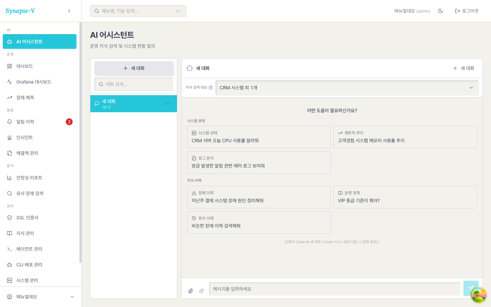
/chat) — 왼쪽 대화 목록, 위쪽 지식 검색 대상(시스템 선택), 가운데 추천 질문 카드, 아래 입력창.질문하기
- 지식 검색 대상에서 시스템을 고릅니다. 여러 개를 동시에 고를 수 있고, 고른 시스템의 과거 장애·문서·정책만 검색합니다. 처음에는 관리자는 전체 시스템, 운영자는 자기가 주담당인 시스템이 선택되어 있습니다.
- 입력창에 질문을 쓰고
Enter로 보냅니다. 줄을 바꾸려면Shift+Enter입니다. 빈 대화 화면의 추천 카드를 누르면 그 질문이 바로 전송됩니다. - 답이 오는 동안 "생각 중..."이 표시됩니다. 멈추고 싶으면
Esc를 누릅니다. 보냈던 질문이 입력창에 다시 채워집니다.
질문 예시
| 분류 | 예시 |
|---|---|
| 시스템 상태 | CRM 서버 오늘 CPU 사용률 알려줘 |
| 메트릭 추이 | 결제 시스템 메모리 사용률 추이 보여줘 |
| 로그 분석 | 방금 발생한 알림 관련 에러 로그 보여줘 |
| 장애 이력 | 지난주 결제 시스템 장애 원인 정리해줘 |
| 운영 정책 | VIP 등급 기준이 뭐야? |
| 유사 사례 | DB 커넥션 풀 고갈과 비슷한 장애 이력 찾아줘 |
답변 읽기
- ▶ 사고 과정 — 눌러서 펼치면 AI가 어떤 순서로 판단했는지 볼 수 있습니다.
- 도구 실행 카드 — AI가 쓴 도구 이름이 나오고, 펼치면 인자와 결과를 확인할 수 있습니다. 실패하면 빨간 "오류"가 붙습니다. 파일로 내보내는 도구(예: 대화 Markdown 내보내기)를 쓰면 다운로드 버튼이 생깁니다.
- 표와 코드는 서식대로 보이고, 코드 블록에는 코드 복사 버튼이 있습니다.
- 답변이 실패하면 다시 시도 버튼이 붙습니다.
이미지 첨부
입력창 왼쪽 📎 버튼이나 Ctrl+V 붙여넣기로 화면 캡처 같은 이미지를 붙일 수 있습니다(이미지 전용, 파일당 10MB). 오류 화면을 찍어 "이 에러 뭐야?"라고 물을 때 좋습니다.
옆의 ✨ Skills 버튼은 아직 준비 중이라 눌리지 않습니다.
대화 관리
- 새 대화 — 주제가 바뀌면 새 대화를 여는 편이 답이 정확합니다.
- 대화 검색 — 제목과 본문을 모두 찾습니다. 본문에서 찾으면 해당 부분이 미리보기로 나옵니다.
- 이름 변경 · 삭제 — 대화 오른쪽
⋯메뉴. 삭제한 뒤 8초 안에는 "되돌리기"로 살릴 수 있습니다. - 단축키:
Ctrl+N새 대화,Ctrl+↑/↓대화 이동,/입력창으로 이동.
어느 화면에서나 쓰는 사이드 패널
오른쪽 아래 마스코트를 누르면 현재 화면 오른쪽에 패널이 열립니다. 기능은 전용 화면과 같고, 지금 화면의 맥락이 함께 전달됩니다. 대시보드에서는 "최근 알람 패턴은?", 인시던트 상세에서는 상태에 따라 "이 인시던트 영향 범위 분석", "근본 원인 추정", "사후분석 초안 작성" 같은 질문을 추천합니다. 패널을 닫아도 답변은 계속 받아지고, 다 오면 마스코트에 안 읽은 수가 붙습니다.
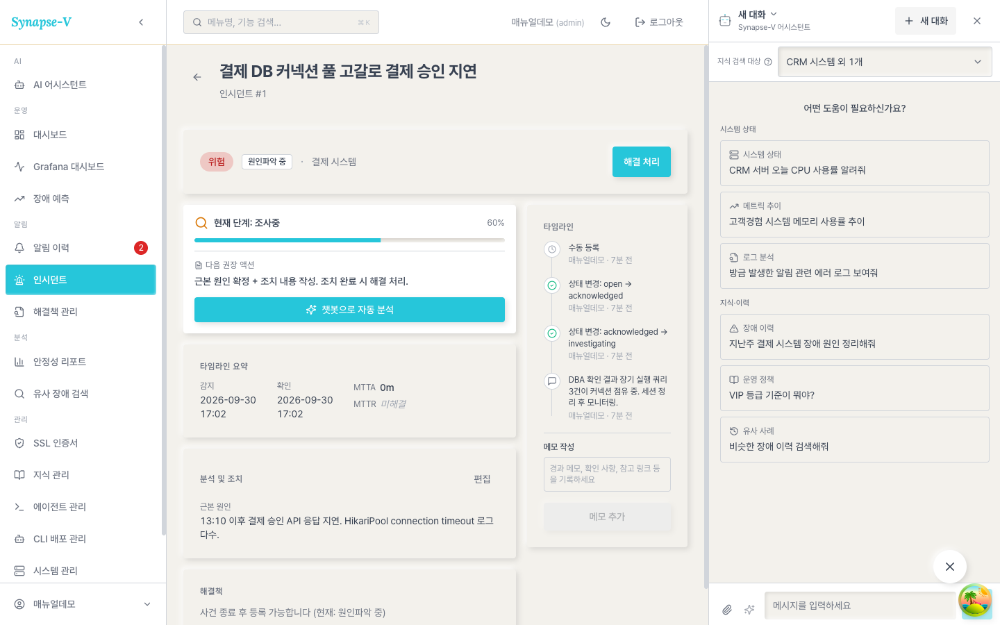
⌄로 최근 대화 5개 사이를 오갈 수 있습니다.✨ 인시던트 자동 통찰
인시던트 상세의 ✨ 챗봇으로 자동 분석 버튼을 누르면 패널이 열리면서 질문 없이 분석이 바로 시작됩니다. AI가 인시던트의 상태, MTTA/MTTR, 연결된 알림, 타임라인을 읽고 필요하면 비슷한 과거 사후분석을 찾아 "🔮 인시던트 #N 자동 통찰"이라는 제목으로 현재 상황 · 유사 사례 · 권장 조치를 정리합니다. 10장에서 다시 다룹니다.
AI는 조회한 데이터를 바탕으로 답하지만, 해석이 틀릴 수 있습니다. 장애 조치나 보고에 쓰기 전에 도구 실행 카드의 원본 결과나 해당 화면에서 수치를 한 번 더 확인하십시오.
대시보드
전체 시스템을 위험·경고·정상으로 나눠 보여 주는 첫 화면입니다. 출근하면 여기서 빨간색이 있는지부터 봅니다.
/dashboard) — 위에서부터 시스템 요약, 운영 현황 카드 3개, 시스템 메트릭 차트, (Trace 분석), 시스템 상세 목록 순서입니다.맨 위 상태 줄
"실시간 연결됨 · N개 시스템 · 알림 집계: 최근 10분 · 조회 시각"이 표시됩니다. 실시간 연결됨이면 새 알림이 오는 즉시 화면이 갱신됩니다. "실시간 연결 끊김"이면 60초 주기 갱신만 되므로 새로고침을 눌러 보십시오.
시스템 요약
위험 시스템이 있으면 빨간 큰 숫자("N 위험 시스템"), 없으면 초록 숫자("N 모두 정상")가 나옵니다. 아래 막대는 위험·경고·정상 비율입니다. 막대나 범례를 누르면 아래 시스템 목록이 그 상태로 걸러지고 목록 위치로 이동합니다.
상태를 정하는 기준
| 상태 | 하나라도 해당하면 |
|---|---|
| 위험 | 최근 10분 안에 복구되지 않은 Critical 메트릭 알림 · 최근 10분 로그 분석 결과가 Critical · 실시간 CPU/메모리/DB 커넥션 80% 초과 · DB 캐시 적중률 95% 미만 |
| 경고 | 위와 같은 조건의 Warning 수준 · CPU/메모리/DB 커넥션 60% 초과 · DB 캐시 적중률 80% 미만 |
| 정상 | 위 어디에도 해당하지 않음. 최근 8시간 안에 AI 예측이 있으면 사유에 "예방 패턴 N건 감지"가 붙습니다. |
운영 현황 카드
| 카드 | 숫자의 뜻 | 누르면 |
|---|---|---|
| 알림 | 최근 10분 동안 복구되지 않은 메트릭 알림 수 | 미확인 알림 이력 |
| 예방 | AI가 이상 패턴을 미리 감지한 시스템 수 | 장애 예측(07장) |
| 수집 | 데이터를 보내고 있는 에이전트 수 / 전체 | 수집이 끊긴 에이전트 목록(14장) |
카드는 최근 10분 기준이고, 눌러서 가는 알림 이력은 기간 제한 없이 미확인 알림 전체를 보여 줍니다. 그래서 두 숫자가 다를 수 있습니다.
시스템 메트릭 차트
최근 6시간의 CPU 사용률(최대) · 메모리 사용률(최대) · 로그 에러 추이(합계) · 웹 응답시간(평균)을 1분 간격으로 그립니다. 오른쪽 위 시스템 선택으로 볼 시스템을 좁힐 수 있습니다. 위험 시스템 선은 굵고 진하게, 정상 시스템 선은 흐리게 그려져서 문제 있는 시스템이 먼저 눈에 들어옵니다. 차트를 더블클릭하면 크게 보이고, 다시 더블클릭하면 돌아옵니다.
Trace 분석
OTel Java 수집기를 등록한 시스템이 있을 때만 나옵니다. 최근 6시간 동안 에러 나거나 느렸던 요청 수를 시스템별 타일로 보여 주며, 50건 이상이면 "⚠ 경고", 100건 이상이면 "⚠ 위험"이 붙습니다. 타일을 누르면 시스템 상세의 성능 분석으로 갑니다.
시스템 상세 목록
시스템마다 한 줄씩 상태 점, 이름, 주요 메트릭 칩(예: CPU 85% — 80% 초과 빨강, 60% 초과 노랑), 24시간 CPU 미니 그래프, 상태 사유("모니터링 정상", "로그 이상 감지" 등)가 나옵니다.
줄 아래 작은 점들은 WAS·WEB·DB 같은 서버별 상태입니다. 필터(전체/위험/경고/정상)와 정렬(상태순/이름순)을 쓸 수 있고, 줄을 누르면 시스템 상세(05장)로 갑니다.
시스템 상세
시스템 한 개의 메트릭, 프로세스, 트레이스, 활성 이슈, 예측, 담당자를 한 화면에 모았습니다. 대시보드 목록에서 시스템 줄을 누르거나 리포트 카드의 상세 보기로 들어옵니다.
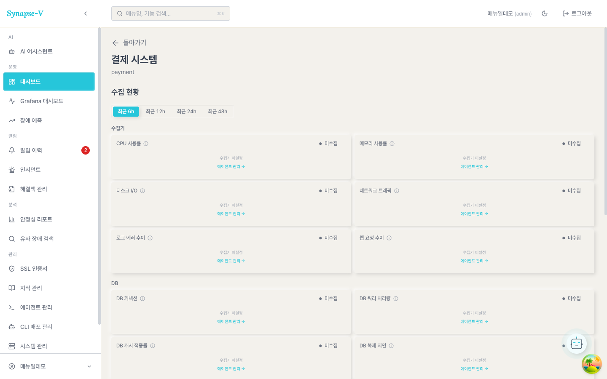
/dashboard/시스템번호) — 수집 현황 영역. 이 캡처는 수집기가 없는 환경이라 모든 카드가 "미수집"으로 보입니다.화면 구성 (위에서 아래로)
| 영역 | 내용 | 사용 팁 |
|---|---|---|
| 수집 현황 | CPU, 메모리, 디스크, 네트워크, 로그 에러, 웹 요청, DB 커넥션·쿼리·캐시·복제 등 수집기별 카드와 미니 그래프 | 기간(최근 6h/12h/24h/48h)을 바꿀 수 있습니다. 카드를 누르면 큰 차트 팝업이 열리고, 인스턴스(서버별)와 시스템 집계를 오갈 수 있습니다. 로그 카드는 "실제 에러"와 "알림성(분류 제외)"을 나눠 보여 줍니다. |
| 프로세스 사용량 | 메모리를 어떤 프로세스가 쓰는지 보여 주는 면적 그림(페이지 캐시, 커널 버퍼, 여유 메모리 포함) | 데이터가 있을 때만 나옵니다. 좀비 프로세스 정보도 여기서 봅니다. |
| 성능 분석 | OTel 등록 시스템의 응답시간 점 그래프(느린 요청 · 에러) | 점을 누르면 그 요청의 Trace 상세가 열립니다. 속성 보기로 실행된 SQL, HTTP URL을 확인합니다. |
| 활성 이슈 | 지금 열려 있는 메트릭 알림과 로그 분석 결과. 위험·경고 수와 최근 30분 건수 | 로그 분석 카드는 💡 분석 결과를 펼쳐 AI 분석을 봅니다. 메트릭 알림은 여기서 바로 확인 처리할 수 있습니다. |
| 예방적 패턴 감지 | AI가 시간별 집계에서 찾은 이상 추세와 예측 | 장애 예측 화면(07장)과 같은 데이터를 이 시스템만 보여 줍니다. |
| 담당자 | 시스템에 연결된 담당자와 역할(주담당·부담당·에스컬레이션) | 바꾸려면 시스템 관리(16장)에서 합니다. |
이 시스템에 해당 수집기가 등록되지 않았거나, 등록했지만 데이터가 안 들어오는 상태입니다. 카드의 에이전트 관리 → 링크로 가서 수집 상태를 확인하십시오(14장).
화면은 30초마다 갱신되고, 로그 분석이 끝나면 즉시 갱신됩니다.
Grafana 대시보드
Grafana 대시보드를 Synapse-V 화면 안에서 바로 봅니다. 대시보드보다 더 긴 기간이나 더 자세한 지표가 필요할 때 씁니다.
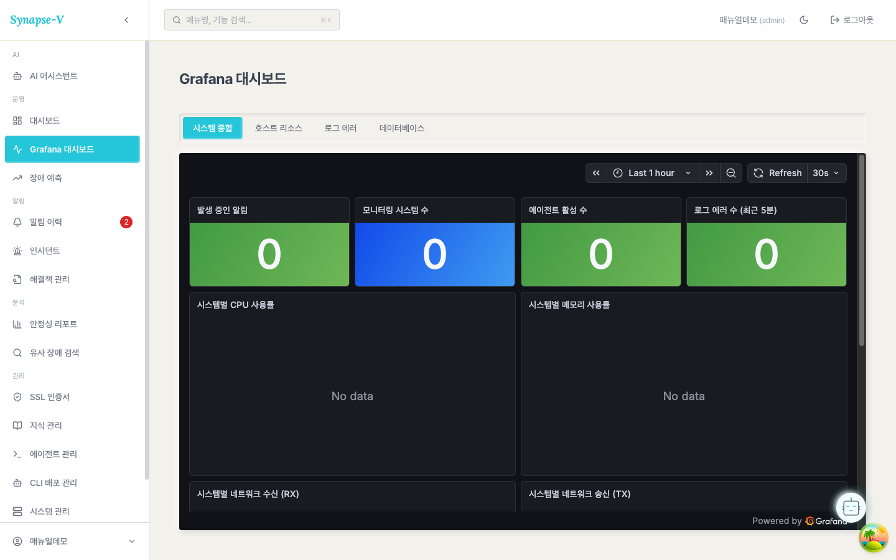
/grafana-dashboard) — 위쪽 탭 4개로 대시보드를 바꿉니다.| 탭 | 내용 |
|---|---|
| 시스템 종합 | 발생 중인 알림, 모니터링 시스템 수, 활성 에이전트 수, 시스템별 CPU·메모리·네트워크 |
| 호스트 리소스 | 서버별 CPU, 메모리, 디스크, 네트워크 상세 |
| 로그 에러 | 시스템·서버별 로그 에러 건수 추이 |
| 데이터베이스 | DB 수집기가 모은 커넥션, 쿼리, 캐시 지표 |
기간 선택(Last 1 hour 등)과 자동 갱신 주기(Refresh)는 패널 안 오른쪽 위 Grafana 버튼으로 바꿉니다.
장애 예측
AI가 매시간 메트릭 집계를 분석해 "이대로면 곧 임계치에 닿는다"고 판단한 항목을 모아 보여 줍니다. 알림이 울리기 전에 미리 손쓰기 위한 화면입니다.
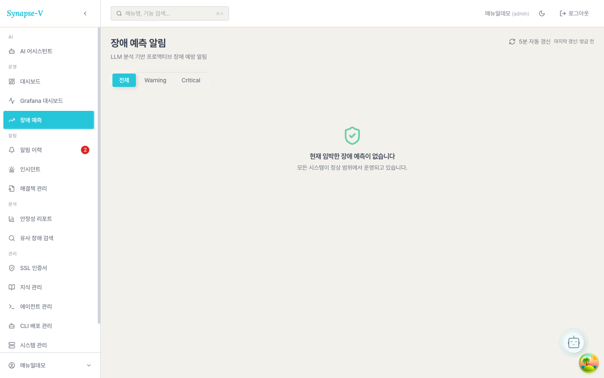
/trends) — 예측이 없으면 "현재 임박한 장애 예측이 없습니다"가 나옵니다.- 대상: 최근 8시간 안의 시간별 집계 중 AI 예측이 Warning 또는 Critical인 항목, 최신순 최대 50건.
- 필터: 전체 / Warning / Critical.
- 카드 내용: 심각도, 시스템, 발생 시각, 메트릭 그룹과 수집기 종류, 예측 문장, 요약, 시스템 상세 보기 링크. Critical 카드가 위에 옵니다.
- Critical 예측이 있으면 맨 위에 "임박한 장애 예측 N건이 감지되었습니다" 배너가 나옵니다.
- 5분마다 자동 갱신됩니다(오른쪽 위 "마지막 갱신" 표시).
장애 예측 화면을 보는 동안 화면 맨 위 Critical 배너는 Critical 예측 건수를 표시합니다. 다른 화면으로 가면 다시 미확인 Critical 알림 수로 돌아옵니다.
알림 이력
메트릭 알림과 로그 분석 알림을 모두 조회합니다. 확인 처리, 로그 심각도 재분류, 오탐 메트릭 예외 등록도 여기서 합니다.
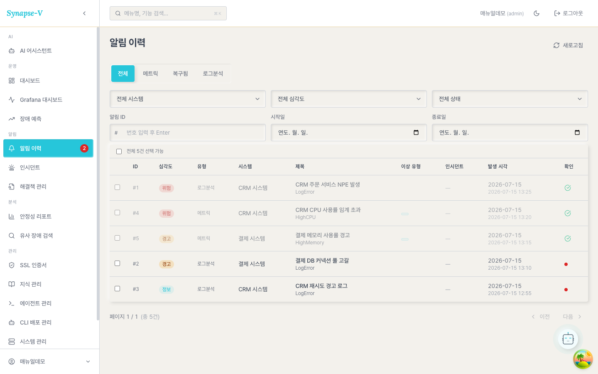
/alerts) — 탭(전체·메트릭·복구됨·로그분석), 필터, 알림 표. 오른쪽 끝 초록 체크는 확인됨, 빨간 점은 미확인입니다.알림은 어떻게 들어오나
- 메트릭 알림 — CPU·메모리·디스크 같은 지표가 임계치를 넘으면 들어옵니다. 들어오는 즉시 과거와 비교해 이상 유형(신규/유사/반복 등)을 매기고, Teams로 담당자에게 보내고, 같은 시스템의 30분 이내 열린 인시던트에 묶습니다. 지표가 정상으로 돌아오면 복구 시각이 기록되고 복구됨 탭으로 옮겨집니다.
- 로그분석 알림 — 5분마다 수집된 에러 로그를 AI가 분석해 결과를 알림으로 남깁니다.
찾기 · 거르기
- 탭: 전체 / 메트릭(아직 복구 안 된 것) / 복구됨 / 로그분석
- 필터: 시스템, 심각도(위험·경고·정보), 상태(미확인·확인됨), 알림 ID(번호 입력 후
Enter), 시작일·종료일(한국 시간 기준) - 적용한 필터는 칩으로 보이고, 칩의 X나 전체 초기화로 풉니다.
- 한 페이지에 20건씩, 30초마다 자동 갱신됩니다.
표의 주요 열
| 열 | 뜻 |
|---|---|
| 이상 유형 | 신규(처음 보는 패턴) · 유사(과거와 비슷) · 반복 · 중복 · 알림성(장애 아님) · 재분류됨. AI 분석이 실패하면 "분석 실패"가 표시되고 마우스를 올리면 이유가 보입니다. |
| 인시던트 | 묶인 인시던트 번호. 누르면 그 인시던트로 갑니다. |
| 확인 | 초록 체크 = 누군가 확인함, 빨간 점 = 아직 아무도 확인 안 함. |
알림 상세 보기
표의 줄을 누르면 오른쪽에 상세 패널이 열립니다. 발생·복구 시각, 호스트, 원본 로그, AI가 쓴 근본 원인과 해결방안, 연관 Trace ID, 등록된 해결책이 나옵니다. 제목은 연필 아이콘으로 고칠 수 있습니다.
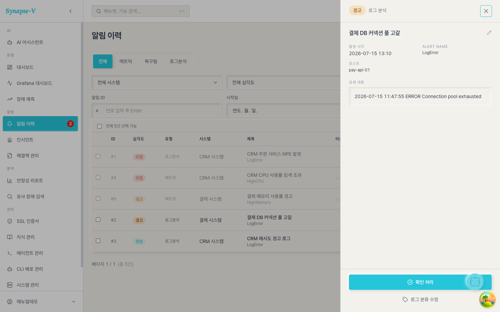
- 확인 처리 — "내가 봤다"는 표시입니다. 사이드바 배지와 Critical 배너 숫자가 줄어듭니다.
- 해결책 관리 — 이 알림이 묶인 인시던트 상세로 갑니다.
- 로그 분류 수정 — 로그 템플릿마다 심각도를 다시 지정하고 재분류 저장. 원본 알림은 "재분류됨"으로 바뀌고 심각도별 새 알림이 만들어지며, 이후 비슷한 로그에도 같은 분류가 적용됩니다.
여러 건 한꺼번에 처리
왼쪽 체크박스로 알림을 고르면 위에 작업 줄이 나타납니다.
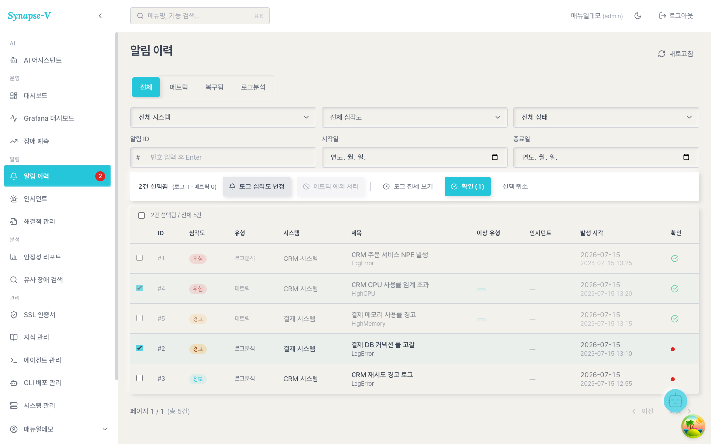
| 버튼 | 하는 일 |
|---|---|
| 로그 심각도 변경 | 고른 로그분석 알림을 정보(알림 제외) / 경고 / 위험으로 바꿉니다. 정보로 바꾸면 앞으로 비슷한 로그는 알림 없이 넘어가고, 경고·위험으로 바꾸면 비슷한 로그부터 Teams 알림이 갑니다. |
| 메트릭 예외 처리 | 오탐인 메트릭 알림을 예외로 등록합니다. 아래 절차 참고. |
| 로그 전체 보기 | 고른 로그 알림의 원본 로그를 시간순으로 한 창에 모아 봅니다. |
| 확인 (N) | 고른 알림 중 미확인 건을 한 번에 확인 처리합니다. |
메트릭 예외 처리 (오탐 막기)
- 반복해서 울리는 오탐 메트릭 알림을 체크하고 메트릭 예외 처리를 누릅니다.
- 알림별로 예외로 둘 호스트와 메트릭을 체크합니다.
- 임계치 오버라이드를 정합니다. 비워 두면 완전 차단(알림 자체를 안 만듦), 값을 넣으면 그 값 이하는 무시합니다(0보다 커야 함).
- 시스템의 모든 서버에 적용하려면 시스템의 모든 호스트에 적용을 체크합니다.
- 사유를 적고 자동 만료를 고릅니다: 30일(권장) / 7일 / 90일 / 날짜 직접 지정 / 만료 없음.
- 예외 등록을 누르면 "규칙 N건 등록, N건 중복(기등록)" 결과가 나옵니다.
등록한 예외를 조회하거나 해제하는 화면은 아직 없습니다. 만료 없음은 피하고, 사유를 구체적으로 남기십시오. 늘 켜져 있는 좀비 프로세스처럼 알려진 예외도 이 방법으로 등록합니다.
인시던트 목록
알림과 로그 분석을 사건 단위로 묶어 추적하고, 감지부터 해결까지 걸린 시간(MTTR)을 잽니다.
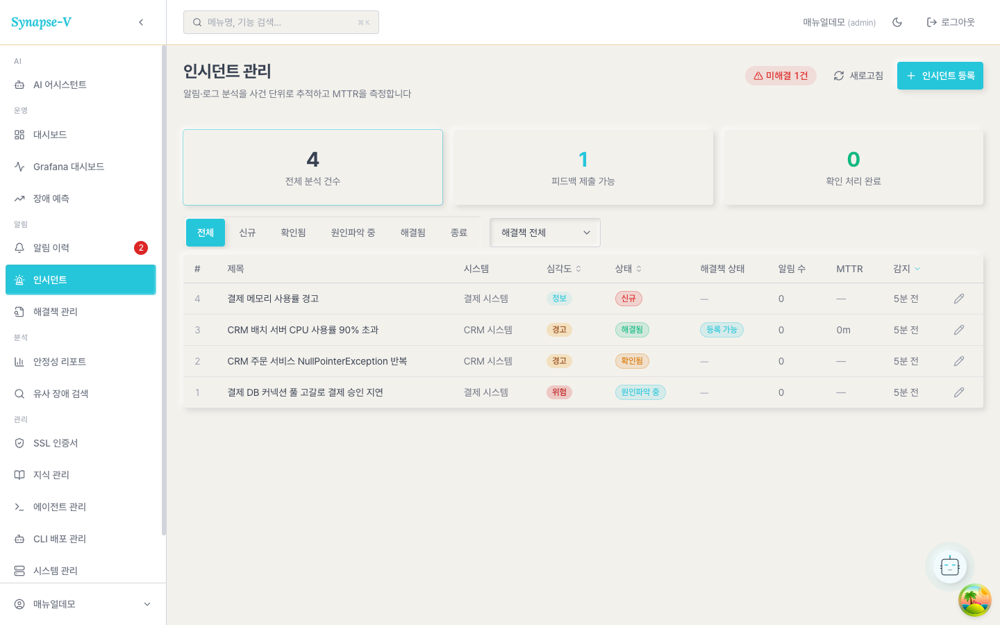
/incidents) — 통계 카드 3개, 상태 탭, 해결책 필터, 인시던트 표.인시던트는 언제 생기나
- 자동 — 알림이 들어왔을 때 같은 시스템에 30분 안에 감지된 열린 인시던트(신규·확인됨·원인파악 중)가 있으면 거기에 붙고, 없으면 새 인시던트가 신규로 생깁니다. Critical 알림이 붙으면 인시던트 심각도도 Critical로 올라갑니다.
- 수동 — 알림 없이 운영자가 직접 등록합니다(아래).
상태 흐름
확인 시각과 해결 시각이 기록되어 MTTA(감지→확인)와 MTTR(감지→해결)이 자동 계산됩니다. 해결책은 해결됨 또는 종료 상태에서만 등록할 수 있습니다.
화면 읽기
- 통계 카드 — 전체 분석 건수 / 피드백 제출 가능(해결됐는데 해결책이 없거나 반려·대기인 건) / 확인 처리 완료(해결책이 승인된 건). 카드를 누르면 그 조건으로 걸러지고, 다시 누르면 풀립니다.
- 상태 탭과 해결책 필터(해결책 전체 / 등록 가능 / 승인 완료)로 목록을 좁힙니다.
- 해결책 상태 열 — 승인 대기(노랑) · 승인 완료(초록) · 반려(빨강) · 등록 가능(해결됐는데 아직 해결책 없음) · —.
- 오른쪽 위 미해결 N건은 신규 상태 건수입니다. 목록은 60초마다 갱신됩니다.
수동 등록
- 인시던트 등록을 누릅니다.
- 시스템, 제목(장애 현상을 짧게), 심각도를 고르고 필요하면 메모를 적습니다.
Critical = 서비스 중단·심각 영향 / Warning = 부분 저하·잠재 위험 / Info = 모니터링 참고 사항 - 등록을 누르면 신규 상태로 목록에 올라갑니다.
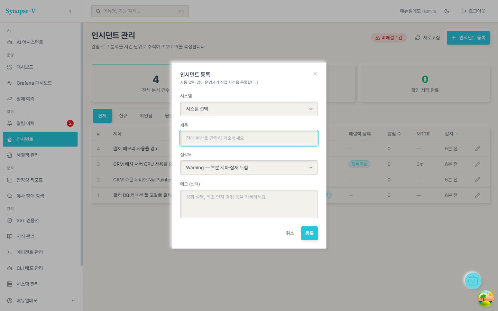
빠른 편집 패널
줄 오른쪽 연필 아이콘을 누르면 목록을 벗어나지 않고 오른쪽 패널에서 제목·심각도·메모를 고치고 상태를 바꿀 수 있습니다.
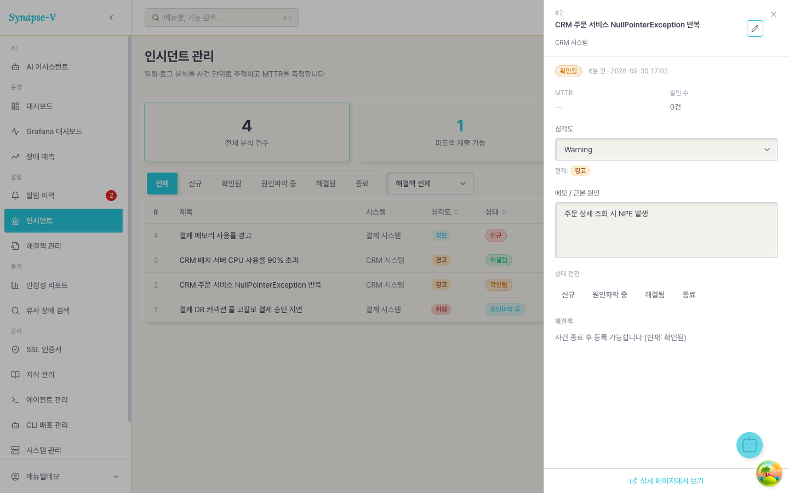
예를 들어 해결됨을 원인파악 중으로 되돌리면 해결 시각이 지워지고 MTTR이 다시 "미해결"이 됩니다. 모든 변경은 타임라인에 남습니다.
"정보성 로그로 분류 — 유사 로그 자동 skip 등록"이 타임라인에 남고, 이 인시던트에 묶인 로그 패턴은 이후 알림 없이 넘어가도록 표시됩니다. 장애가 아니었던 사건에 씁니다.
인시던트 상세
사건 하나를 처음부터 끝까지 처리하는 작업 화면입니다. 지금 무엇을 해야 하는지 안내하고, 분석·보고서 작성을 AI가 돕습니다.
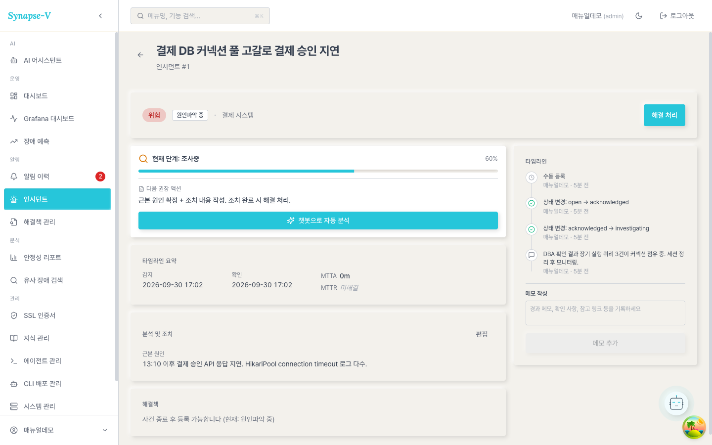
/incidents/번호) — 위 상태 카드, 왼쪽 다음 액션 가이드·타임라인 요약·분석 및 조치·해결책·연결된 알림, 오른쪽 타임라인과 메모.상태 카드 · 다음 단계 버튼
심각도, 현재 상태, 시스템 이름 옆에 다음 단계로 넘기는 버튼이 있습니다. 첫 번째 버튼이 권장 동작입니다.
| 현재 상태 | 나오는 버튼 |
|---|---|
| 신규 | 확인 / 원인파악 중 / 해결 처리 |
| 확인됨 | 원인 파악 중 / 해결 처리 |
| 원인파악 중 | 해결 처리 |
| 해결됨 | 종료 처리 |
| 종료 | (없음) |
다음 액션 가이드
"현재 단계"와 진행률(신규 20% → 종결 100%), 그리고 다음 권장 액션을 보여 줍니다.
| 단계 | 다음 권장 액션 |
|---|---|
| 신규 | 담당자 호출 + 인시던트 확인 처리. 영향 범위 1차 파악. |
| 확인 | 원인 조사 시작. 상태를 원인 파악 중으로 전환. |
| 조사중 | 근본 원인 확정 + 조치 내용 작성. 조치 완료 시 해결 처리. |
| 해결 | 사후 분석 작성. 문제 재발 방지 대책 수립 후 종결. |
| 종결 | 종결됨. 추가 액션 불필요. |
가이드는 신규/확인/조사중/해결/종결, 목록과 배지는 신규/확인됨/원인파악 중/해결됨/종료라고 씁니다. 같은 단계입니다.
✨ 챗봇으로 자동 분석
가이드 아래 버튼을 누르면 AI 어시스턴트 패널이 열리면서 이 인시던트 분석이 바로 시작됩니다. AI가 상태, MTTA/MTTR, 연결 알림, 타임라인을 읽고 필요하면 비슷한 과거 사후분석을 찾아 현재 상황 · 유사 사례 · 권장 조치를 800자 안팎으로 정리합니다. 결과는 대화 기록에 남으므로 이어서 "관련 운영 가이드 보여줘"처럼 더 물어볼 수 있습니다.
타임라인 요약
감지·확인·해결 시각과 MTTA(감지→확인), MTTR(감지→해결)입니다. 아직 그 단계가 아니면 "미해결"로 보입니다.
분석 및 조치 — 근본 원인 · 조치 내용 · 사후 분석
- 편집을 누릅니다.
- 직접 쓰거나 DevX 분석을 누릅니다. AI가 알림과 로그를 바탕으로 세 칸을 자동으로 채웁니다. 이미 내용이 있으면 "기존 내용을 덮어씁니다" 확인이 나옵니다.
- 내용을 검토하고 고친 뒤 저장을 누릅니다. DevX 분석 결과도 저장을 눌러야 반영됩니다.
- 요약 보고서를 누르면 "장애보고 자동 작성" 창에 보고용 요약문이 만들어집니다. 복사해서 보고 메일·메신저에 붙입니다.
타임라인 · 메모
오른쪽 타임라인에 알림 추가, 분석 추가, 상태 변경, 메모가 시간순으로 쌓입니다. 메모 작성 칸에 경과, 확인 사항, 참고 링크를 적고 메모 추가를 누르면 교대 근무자나 다른 담당자가 진행 상황을 바로 파악할 수 있습니다.
연결된 알림
이 인시던트에 묶인 알림 목록입니다. 줄을 누르면 알림 상세 패널이 열립니다.
해결 후: 해결책 등록
상태가 해결됨이 되면 해결책 영역에 해결책 등록 버튼이 나옵니다. 절차는 다음 장에서 설명합니다.
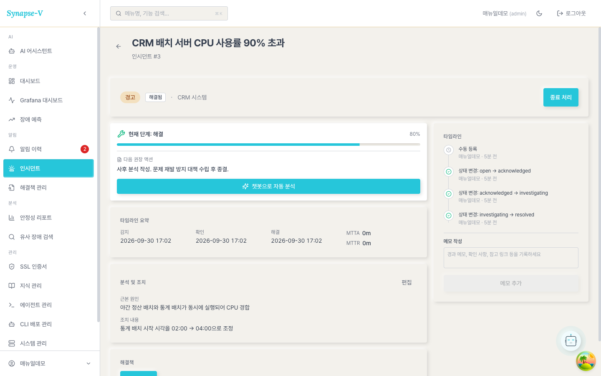
해결책 등록 · 승인 · 검색
해결한 사건의 조치 내용을 해결책으로 등록하면, 승인자가 검토한 뒤 검색 자산이 됩니다. 다음에 비슷한 알림이 오면 AI 어시스턴트, 유사 검색, 해결책 검색이 이 기록을 찾아 줍니다.
1. 해결책 등록 (인시던트 상세)
- 해결됨 또는 종료 상태의 인시던트에서 해결책 등록을 누릅니다.
- 장애 유형을 고릅니다: DB 연결 오류 / 메모리 부족 / 디스크 부족 / 네트워크 오류 / 타임아웃 / 애플리케이션 오류 / 기타.
- 해결 내용에 실제로 한 조치를 씁니다. 다음 사람이 그대로 따라 할 수 있게 구체적으로 적는 것이 좋습니다.
- 승인자를 고릅니다. 이름 옆 "· Teams 미연동"이 붙은 사람은 Teams 승인 요청을 받지 못하니 피하십시오.
- 필요하면 파일 첨부(이미지, PDF, Excel, Word, 텍스트 · 파일당 10MB · 최대 10건). 첨부 파일의 글자도 추출(OCR)되어 검색에 쓰입니다.
- 등록을 누르면 승인 대기 상태가 되고, 승인자에게 Teams 카드 "[Synapse] 해결책 승인 요청"이 갑니다.
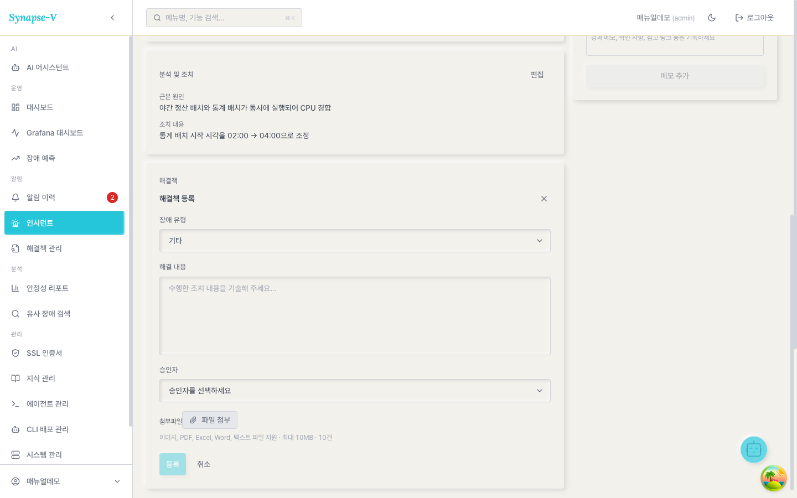
첨부 파일은 등록 후 백그라운드에서 글자를 추출합니다. 처리 중에는 승인할 수 없고("OCR 처리 중입니다"), 실패하면 "첨부 OCR 실패 (N건)"과 OCR 재시도 버튼이 나옵니다.
2. 승인 · 반려
승인은 관리자 또는 지정된 승인자가 합니다.
- Teams에서 — 승인 요청 카드의 버튼을 누르면 "해결책 감리 검토" 화면이 열립니다. 내용을 보고 승인 또는 반려(사유 필수)를 누릅니다.
- Synapse에서 — 해결책 관리 → 해결책 감리 탭(관리자 전용)에서 대기 건 목록을 보고 처리합니다.
현재 "해결책 감리 검토" 화면은 관리자만 들어갈 수 있게 되어 있어서, 운영자 권한의 지정 승인자는 링크를 눌러도 대시보드로 돌아갑니다. 이 경우 관리자에게 승인을 요청하거나, 관리자가 해당 승인자를 대신해 처리하십시오.
3. 반려되면: 수정 후 재등록
- 등록자에게 Teams 카드 "[Synapse] 해결책이 반려되었습니다"가 옵니다. 카드 버튼이나 인시던트 상세의 수정 후 재등록을 누릅니다.
- 맨 위 반려 사유를 보고 해결 내용을 고친 뒤 재등록 사유를 적고 재등록하기를 누릅니다.
- 재등록할 때 첨부는 새로 올린 것으로 교체됩니다. 기존 파일을 유지하려면 같은 파일을 다시 올리십시오.
재등록은 최대 5회입니다. 3회부터 경고가 뜨고, 5회에 도달하면 새 해결책을 따로 등록해야 합니다. 이미 승인된 해결책을 고치면 다시 승인 대기로 돌아가 재승인이 필요합니다.
4. 해결책 관리 메뉴 — 과거 해결책 검색
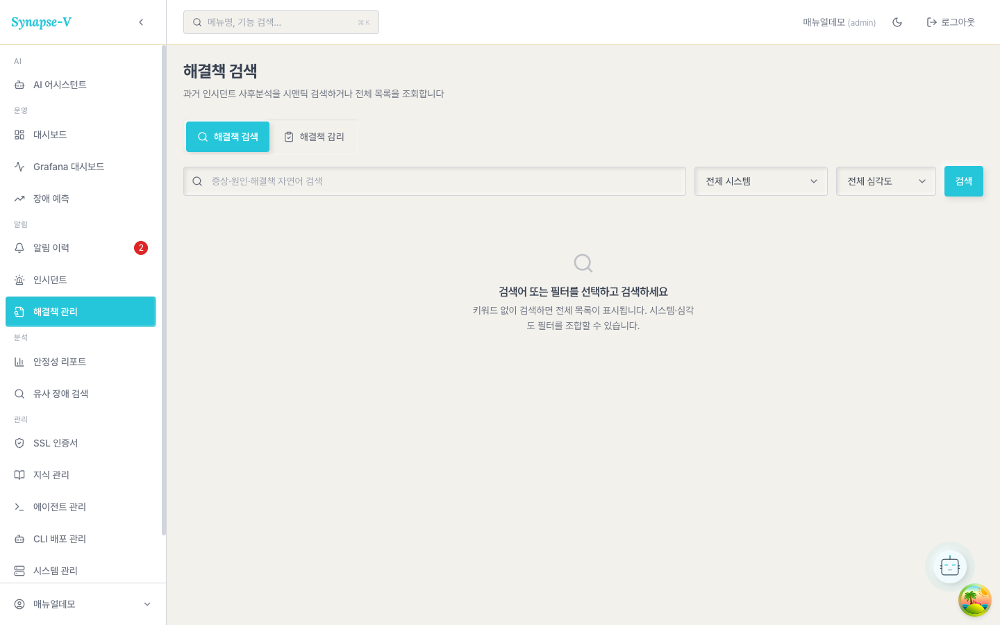
/feedback/manage, 화면 제목 "해결책 검색") — 관리자에게는 해결책 감리 탭이 함께 보입니다.- 검색창에 증상·원인·해결책을 자연어로 쓰고 시스템·심각도를 고른 뒤 검색. 뜻이 비슷한 해결책을 찾아 유사도와 함께 최대 20건 보여 줍니다.
- 검색어 없이 검색을 누르면 승인된 사후분석 전체 목록이 나옵니다.
- 줄을 누르면 그 인시던트 상세로 갑니다.
해결책 감리 탭 (관리자)
승인 대기와 반려 상태의 해결책이 한 페이지에 50건씩 나옵니다. 등록자, 지정 승인자, 재등록 횟수를 보고 승인 또는 반려(사유 입력)를 누릅니다.
안정성 리포트
시스템별 메트릭 집계와 AI 요약을 기간 단위로 봅니다. 주간 회의나 월간 보고 자료를 만들 때 씁니다.
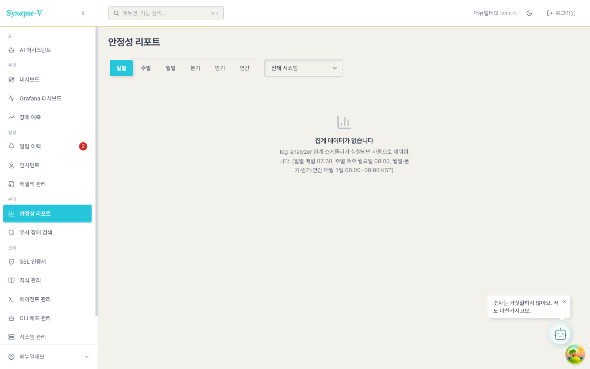
/reports) — 집계가 아직 없으면 빈 화면과 집계 일정이 안내됩니다.- 기간: 일별 / 주별 / 월별 / 분기 / 반기 / 연간. 시스템: 전체 또는 하나.
- 시스템마다 가장 최근 집계 1건이 카드로 나옵니다. 카드에는 기준일, 심각도(정상·경고·위험·정보), 주요 메트릭 3개, AI 요약, 추세 문장, 상세 보기 →(시스템 상세로 이동)가 있습니다.
- 고른 기간과 시스템은 주소에 남으므로 링크로 공유할 수 있습니다.
집계 일정 (한국 시간)
| 기간 | 만들어지는 때 |
|---|---|
| 일별 | 매일 07:30 |
| 주별 | 매주 월요일 08:00 |
| 월별 · 분기 · 반기 · 연간 | 매월 1일 08:00 ~ 09:00 |
리포트 발송 이력
Teams로 발송된 리포트 기록(유형, 기간, 발송 시각, 발송 완료/실패, 시스템 수, 요약)을 최근 30건까지 봅니다.
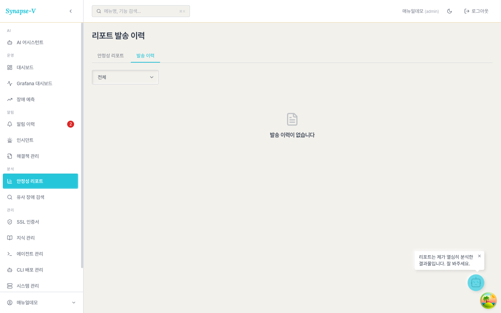
/reports/history)현재 사이드바나 리포트 화면에 링크가 없으므로 주소창에 /reports/history를 직접 입력해 들어가십시오. 들어간 뒤에는 위쪽 탭으로 리포트와 발송 이력을 오갈 수 있습니다.
유사 장애 검색
지금 상황을 말로 설명하면 과거 메트릭 패턴이나 집계 요약 중 비슷했던 때를 찾아 줍니다. "전에도 이런 적 있었나?"를 확인할 때 씁니다.
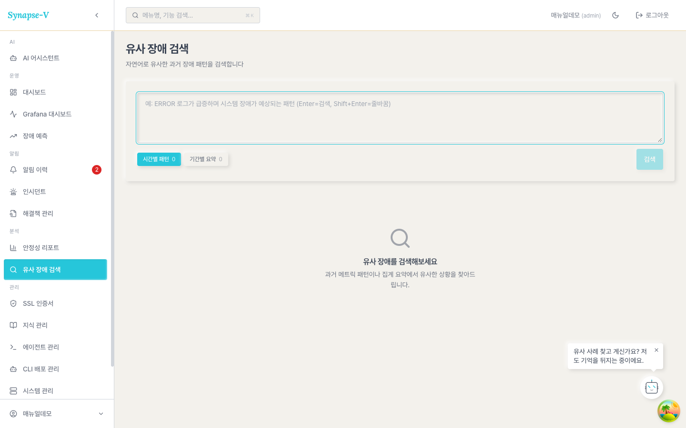
/search) — 검색어 입력, 검색 대상(시간별 패턴 / 기간별 요약), 검색 버튼.검색 방법
- 상황을 문장으로 씁니다. 예: "ERROR 로그가 급증하며 시스템 장애가 예상되는 패턴", "야간 배치 시간에 CPU가 90%까지 오름".
- 검색 대상을 고릅니다.
- 시간별 패턴 — 1시간 단위 메트릭 변화 패턴에서 찾습니다. 짧은 순간의 이상을 찾을 때.
- 기간별 요약 — 일·주·월 집계 분석 요약에서 찾습니다. 긴 추세를 찾을 때.
Enter또는 검색. 줄바꿈은Shift+Enter입니다.
결과 읽기
- 최대 10건. 카드마다 시스템, 기간, 유사도 %(95% 이상 초록, 85% 이상 파랑, 그 미만 주황), 심각도, AI 요약이 나옵니다.
- 시간별 패턴 결과에는 메트릭 그룹, 수집기 종류, 예측 문장이 더 붙습니다.
- 관련 알림 이력을 누르면 그 시스템의 알림 이력으로 갑니다.
- 결과에 심각도가 섞여 있으면 위험·경고·정상 필터가 나타납니다.
시간별 패턴 ↔ 기간별 요약만 바꿔서는 결과가 바뀌지 않습니다. 검색을 다시 누르십시오. 해결책(조치 내용)을 찾으려면 이 화면이 아니라 해결책 관리(11장)나 AI 어시스턴트를 쓰십시오.
에이전트 관리
서버에서 데이터를 모으는 수집기(에이전트)를 등록하고, 원격으로 설치·실행·중지합니다. 처음 설치 절차는 설치·온보딩 가이드 13장에 자세히 있고, 여기서는 일상 운영에 필요한 기능을 설명합니다.
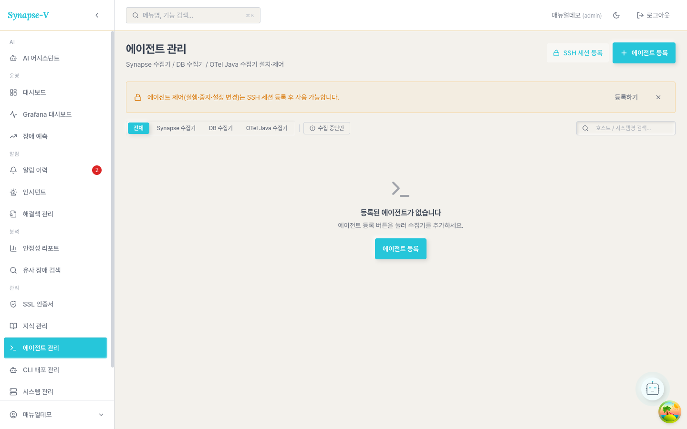
/agents) — 위쪽 SSH 세션 등록·에이전트 등록 버튼, 종류 필터, 수집 중단만 보기, 검색.수집기 종류
| 종류 | 모으는 것 | 설치 방식 |
|---|---|---|
| Synapse 수집기 | CPU, 메모리, 디스크, 네트워크, 프로세스, TCP, 로그, 웹 서버 액세스 로그 등 | SSH로 서버에 바이너리 설치 |
| DB 수집기 | Oracle · PostgreSQL · MSSQL · MySQL 커넥션, 쿼리, 캐시 | 서버 설치 없이 Synapse-V가 DB에 직접 접속 |
| OTel Java 수집기 | WAS 요청 추적(Trace), 느린 요청, 에러 | WAS 기동 계정으로 SSH 설치 후 WAS 재시작 |
목록 보기
- 시스템별로 묶여 나오고, 카드마다 상태 배지가 있습니다: 실행 중 · 중지 · 설치됨 · 알 수 없음. Synapse·DB 수집기는 실제로 데이터가 들어오고 있으면 "실행 중"입니다.
- 수집 중단만을 켜면 데이터가 끊긴 에이전트만 보입니다(60초마다 재확인). 대시보드의 수집 카드를 눌러도 이 상태로 들어옵니다.
- 카드를 누르면 상세 화면으로 갑니다.
SSH 세션 등록
설치·실행·중지·설정 변경처럼 서버에 명령을 보내는 작업은 먼저 SSH 세션을 등록해야 합니다.
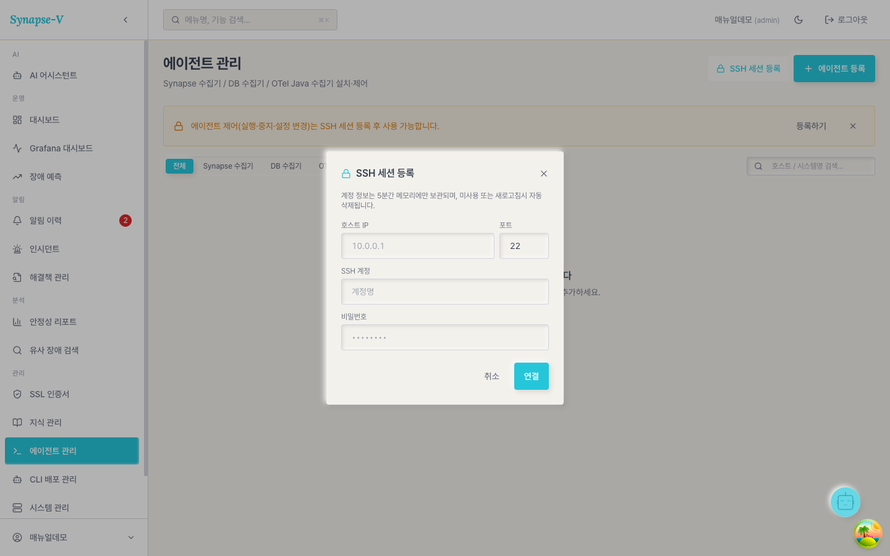
- 계정 정보는 서버 메모리에만 5분 보관되고, 쓰지 않거나 새로고침하면 지워집니다. 작업할 때마다 5분이 연장됩니다.
- SSH 계정은 에이전트를 등록할 때 넣은 계정과 같아야 합니다.
- 세션 호스트와 에이전트 서버가 다르면 제어 버튼이 막히고 안내가 뜹니다. 해당 서버로 세션을 다시 등록하십시오.
에이전트 등록
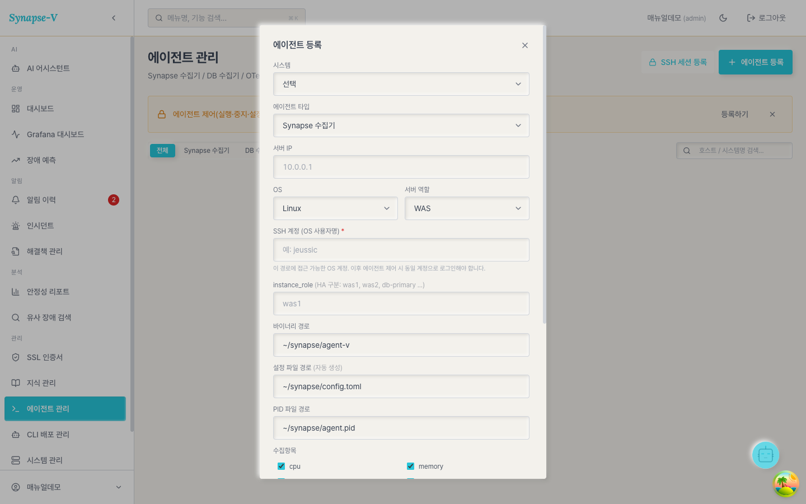
- 공통: 시스템(내가 주담당인 시스템이 자동 선택), 에이전트 타입, 서버 IP, OS, 서버 역할(Web/WAS/DB/Middleware/기타).
- Synapse 수집기: SSH 계정(필수), instance_role(HA 구분, 예
was1), 설치 경로, 수집항목 체크, 로그 수집 경로·키워드, 웹 서버 액세스 로그 설정. - DB 수집기: DB 타입, Service Name/Database, 포트, DB 계정·비밀번호, 수집 주기(기본 60초). 등록할 때 실제로 DB 접속을 시험하므로 실패하면 등록되지 않습니다.
- OTel Java 수집기: SSH 계정, 설치 경로, Tempo 서비스명, 서비스 유형(Tomcat · JBoss/WildFly · JEUS · systemd · 독립 실행), JDK 버전, WAS 설치 경로.
에이전트 상세 — 설치 · 제어 · 설정
| 카드 | 할 수 있는 일 |
|---|---|
| 설치 | 설치 실행 → 설치 대기 → 진행 중 → 완료/실패(로그 표시). 같은 서버의 다른 에이전트와 설치 경로가 겹치면 경고가 나오고 막힙니다. |
| 상태 및 제어 | 실행 · 중지 · 재시작 · 상태 갱신. OTel 수집기는 제어 버튼 대신 "WAS 재시작으로 반영"하는 절차 안내가 나옵니다. |
| 수집 상태 (최근 1분) | 수집 중(60초 안에 데이터 옴) / 수집 중단(60초 넘게 없음) / 데이터 없음, 마지막 수신 시각, 실제로 돌고 있는 수집기 배지. |
| 설정 파일 | Synapse 수집기: 설정 파일 불러오기 → 편집 → 업로드. 올리기 전에 TOML 문법을 검사합니다. 왼쪽에 샘플 설정이 있습니다. OTel 수집기: 읽기 전용. 바꾸려면 재설치합니다. |
삭제
- 에이전트 삭제 — Synapse-V 목록에서만 지웁니다. 서버의 파일과 프로세스는 그대로 남습니다.
- 완전 삭제 (원격 포함) — Synapse 수집기만. 프로세스 종료 + 설치 폴더 삭제 + 목록 삭제를 한 번에 합니다. SSH 세션이 필요합니다.
서버 IP, 계정, 경로 같은 등록 정보를 바꾸는 화면이 없습니다. 바꿔야 하면 삭제한 뒤 다시 등록하십시오. Synapse 수집기의 수집 설정은 설정 파일 업로드로 바꿀 수 있습니다.
CLI 배포 관리
운영 서버에 synapse 명령어 도구를 배포합니다. 서버에 접속해 작업하는 중에 브라우저 없이 터미널에서 AI 어시스턴트에게 물어볼 수 있습니다.
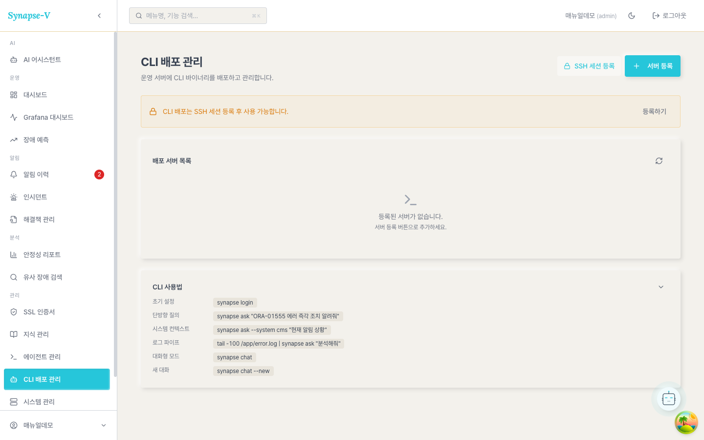
/synapse-cli) — 배포 서버 목록과 CLI 사용법.배포 절차
- SSH 세션 등록(14장과 같은 방식).
- 서버 등록 → 시스템, 서버 IP, 설치 경로(기본
~/bin/synapse) 입력 → 등록. - 목록에서 그 서버의 배포를 누릅니다. 이미 설치된 서버는 재배포가 새 버전으로 덮어씁니다.
상태는 설치됨 / 미설치로 보이고, 배포 버튼은 SSH 세션이 있어야 눌립니다. 목록에서 지우는 것은 세션 없이도 됩니다.
CLI 사용법 (서버에서)
| 용도 | 명령 |
|---|---|
| 처음 한 번 로그인 | synapse login |
| 한 번 묻기 | synapse ask "ORA-01555 에러 즉각 조치 알려줘" |
| 시스템 지정 | synapse ask --system cms "현재 알림 상황" |
| 로그를 바로 넘겨 묻기 | tail -100 /app/error.log | synapse ask "분석해줘" |
| 대화형 | synapse chat · 새 대화는 synapse chat --new |
시스템 관리
모니터링 대상 시스템과 그 시스템의 서버 IP, 담당자, Teams 알림 채널을 관리합니다.
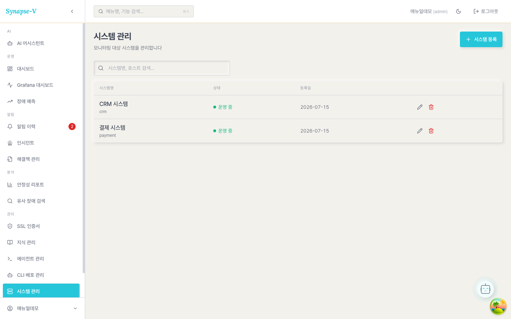
/systems) — 시스템명(표시 이름과 시스템 ID), 상태, 등록일, 수정·삭제 아이콘.등록 · 수정
- 시스템 등록을 누릅니다.
- 시스템 ID(영문 소문자·숫자·
-·_, 나중에 못 바꿈), 표시 이름, 상태(운영 중/비활성), Teams Webhook URL, 설명을 입력하고 등록. - 저장하면 같은 창이 수정 모드로 바뀌고 아래에 서버 IP와 담당자 영역이 나타납니다. 이어서 연결합니다.
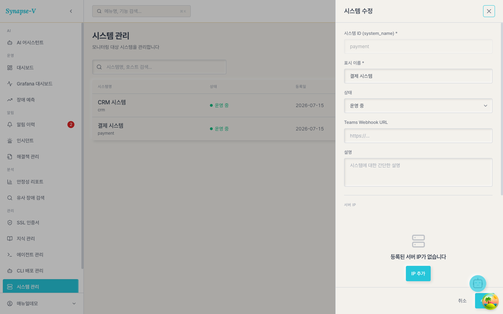
서버 IP
IP 추가 → 서버 IP와 역할 구분(예: WAS1, DB1)을 넣고 추가. 역할 구분은 AI 어시스턴트가 "WAS1 서버 상태"처럼 서버를 가리킬 때 씁니다.
담당자
담당자 추가 → 담당자, 역할(주담당/부담당/에스컬레이션), 알림 채널(Teams/Webhook)을 고르고 연결. 목록에는 담당자 관리(17장)에 먼저 등록된 사람만 나옵니다. X 버튼으로 연결을 풉니다.
시스템에 넣은 웹훅이 전역 Teams 설정보다 먼저 쓰입니다. Power Automate 워크플로 웹훅 주소를 넣습니다(설치·온보딩 가이드 PART 2).
삭제
휴지통 아이콘 → "이 작업은 되돌릴 수 없습니다" 확인 → 삭제. 운영을 잠시 멈추는 경우라면 삭제보다 상태를 비활성으로 바꾸는 편이 안전합니다.
검색창 안내 문구에 "호스트"가 있지만 실제로는 표시 이름과 시스템 ID만 검색됩니다.
담당자 관리
가입 승인된 사용자를 알림 담당자로 등록하고, Teams @멘션에 쓸 UPN과 개인 Webhook을 지정합니다.
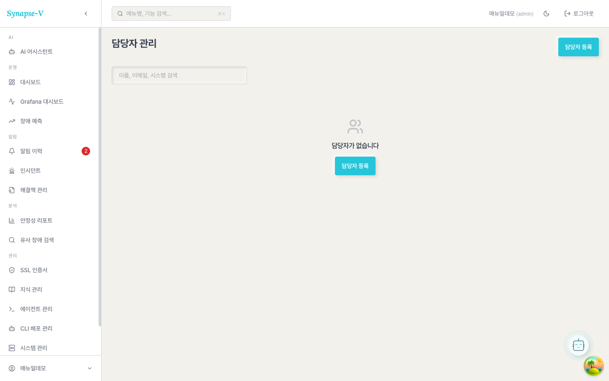
/contacts) — 이름, 이메일, Teams UPN, 연결된 시스템(“보기 (N)”에 마우스를 올리면 목록), 등록일.등록
- 담당자 등록을 누릅니다.
- 사용자 검색에 이름이나 이메일을 넣고
Enter→ 사용자 선택에서 고릅니다. 이미 담당자인 사람은 "— 이미 등록됨"으로 보이고 고를 수 없습니다. - Teams UPN(보통 회사 이메일)과 필요하면 Webhook URL을 넣고 저장.
- 시스템에 연결하는 것은 시스템 관리(16장)에서 합니다.
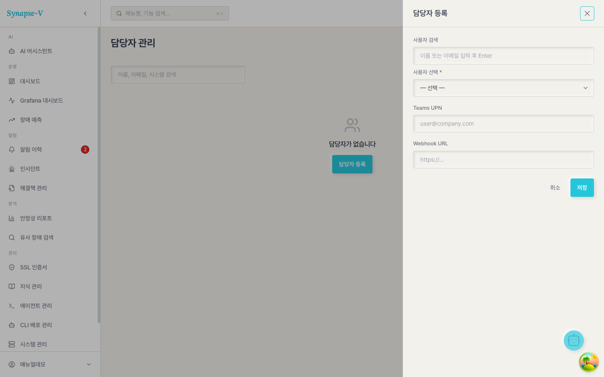
- 수정: Teams UPN과 Webhook만 바꿀 수 있습니다. 이름·이메일은 사용자 계정을 따라가며, 관리자가 사용자 정보를 바꾸면 자동으로 맞춰집니다.
- 삭제: 연결된 시스템에서도 자동으로 빠집니다.
- 가입하지 않은 사람은 담당자로 넣을 수 없습니다. 먼저 사용자 신청과 승인(01장·19장)을 거쳐야 합니다.
내 프로필
사이드바 맨 아래 내 이름 → 내 프로필. 이름과 비밀번호를 바꿉니다.
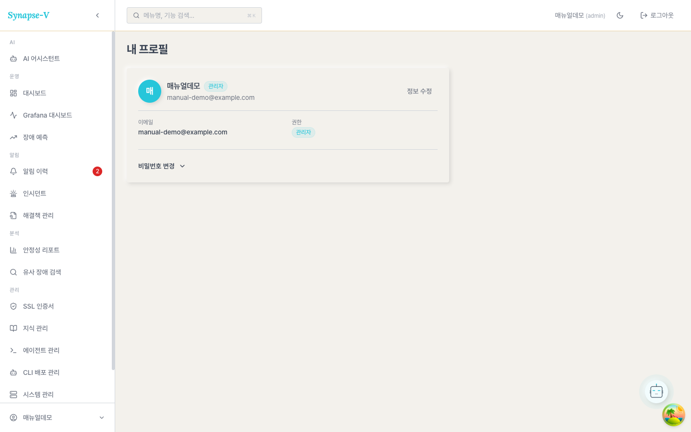
/profile) — 이름, 권한(관리자/운영자), 이메일.- 정보 수정 → 이름(2자 이상) 변경 → 저장. 이메일은 바꿀 수 없습니다.
- 비밀번호 변경 → 현재 비밀번호, 새 비밀번호(영문+숫자+특수문자 8자 이상), 확인 → 비밀번호 변경.
가입 때는 "대문자+숫자 12자 이상", 프로필 변경 때는 "영문+숫자+특수문자 8자 이상"을 검사합니다. 두 규칙을 모두 만족하는 비밀번호(예: 대문자·숫자·특수문자를 섞은 12자 이상)를 쓰면 헷갈리지 않습니다.
사용자 관리 관리자
가입 승인·거부, 계정 활성·비활성, 권한 변경, 정보 수정, 삭제를 합니다. 계정 메뉴 → 사용자 관리(옆 숫자는 승인 대기 인원).
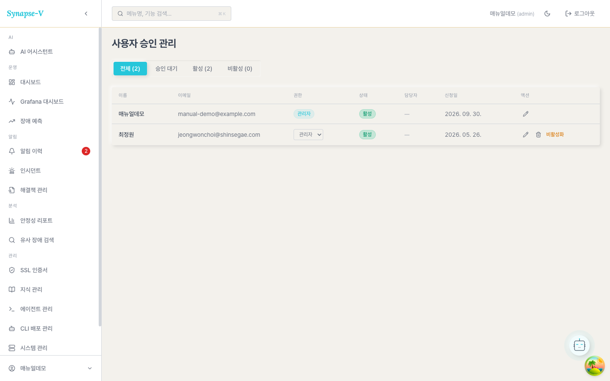
/admin/users) — 탭: 전체 · 승인 대기 · 활성 · 비활성.| 상태 | 버튼 | 결과 |
|---|---|---|
| 승인 대기 | 승인 / 거부 | 승인하면 로그인 가능. 거부하면 비활성 탭으로 갑니다. |
| 활성 | 비활성화 | 로그인할 수 없게 됩니다. |
| 비활성 | 재활성화 | 다시 로그인할 수 있습니다. |
| 공통 | 연필 · 휴지통 | 이름·이메일·비밀번호 수정 / 계정 완전 삭제 |
"권한" 열의 운영자/관리자 드롭다운은 확인 창 없이 바꾸는 즉시 적용됩니다. 본인 권한은 바꿀 수 없습니다.
- 수정 창의 새 비밀번호는 비워 두면 그대로이고, 입력하면 규칙 검사 없이 그대로 바뀝니다. 비밀번호를 잊은 사용자에게 임시 비밀번호를 줄 때 쓰고, 본인이 프로필에서 바꾸도록 안내하십시오.
- 이름·이메일을 바꾸면 연결된 담당자 정보도 함께 바뀝니다.
- 담당자로 연결된 사용자는 삭제할 수 없습니다. 담당자 관리에서 먼저 해제하십시오. 퇴사자는 삭제보다 비활성화를 권장합니다.
DevX AgentCode · 챗봇 도구 관리 관리자
AI 기능이 어떤 LLM 설정으로 돌지, AI 어시스턴트가 어떤 도구를 쓸 수 있는지 정합니다.
DevX AgentCode 관리
로그 분석, 집계 리포트, 장애 예측, 인시던트 분석, 챗봇 같은 업무 영역마다 DevX에서 발급받은 Agent Code를 지정합니다.
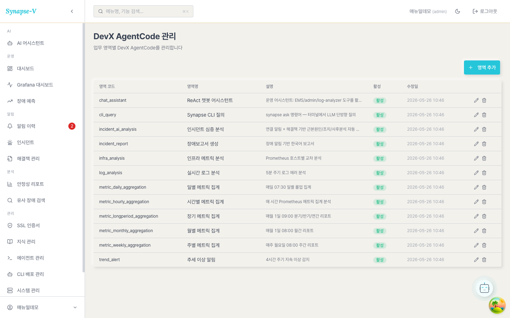
/admin/llm-config) — 영역 코드, 영역명, 설명, 활성, 수정일.- Agent Code 값은 표에 보이지 않습니다. 연필 아이콘으로 수정 창을 열어 확인·변경합니다.
- 기본 영역 12개:
log_analysis,metric_hourly/daily/weekly/monthly/longperiod_aggregation,trend_alert,infra_analysis,incident_report,incident_ai_analysis,chat_assistant,cli_query.
각 기능이 영역 코드 이름으로 설정을 찾습니다. 기본 영역을 지우거나 코드를 바꾸면 그 기능의 AI 호출이 실패할 수 있습니다. 잠시 끄려면 활성 상태 토글을 쓰십시오.
챗봇 도구 관리
AI 어시스턴트가 쓰는 도구를 묶음(Executor)별로 켜고 끕니다. 묶음 이름 옆 "N/M 활성"이 켜진 도구 수입니다.
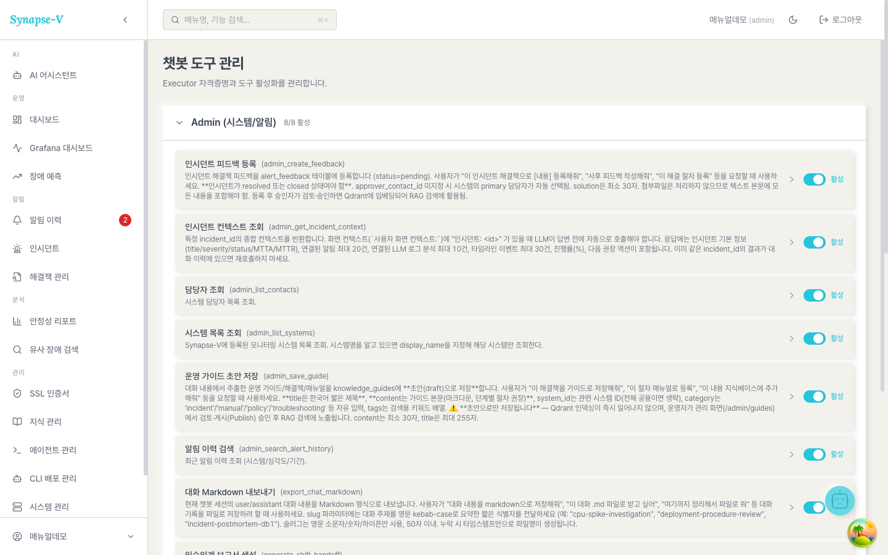
/admin/chat-tools) — Admin 묶음을 펼친 모습. 도구마다 설명과 활성 토글이 있습니다.| 묶음 | 도구가 하는 일 |
|---|---|
| Admin (시스템/알림) | 시스템·담당자·알림 이력·인시던트 조회, 해결책 등록, 운영 가이드 초안 저장, 대화 내보내기 등 |
| EMS (서버 모니터링) | 사내 EMS에서 서버 상태 조회. EMS URL · ID · 비밀번호를 저장해야 켤 수 있습니다(연결 테스트로 확인). |
| Log Analyzer (로그/집계) | 로그 분석 결과와 집계 데이터 조회 |
| Prometheus (Raw 메트릭) | 메트릭 원본 조회 |
| Qdrant (벡터 검색) | 과거 장애·해결책·가이드 유사 검색 |
도구를 끄면 AI 어시스턴트가 그 도구를 쓰지 않습니다. 특정 도구가 잘못된 결과를 내거나 외부 시스템 점검 중일 때 잠시 꺼 두는 용도로 씁니다.
이 메뉴는 메뉴 검색(Ctrl+K)에 나오지 않으니 계정 메뉴에서 들어가십시오.
스케줄러 이력 · 벡터 상태 · OAuth 클라이언트 관리자
자동 작업이 제대로 돌고 있는지 점검하고, 다른 사내 시스템에 Synapse 로그인을 열어 줍니다.
스케줄러 이력
로그 분석(5분), 시간별·일별 집계, 주간·월간·장기 리포트, 장애 예측 같은 자동 작업의 실행 결과를 최근 200건까지 봅니다.
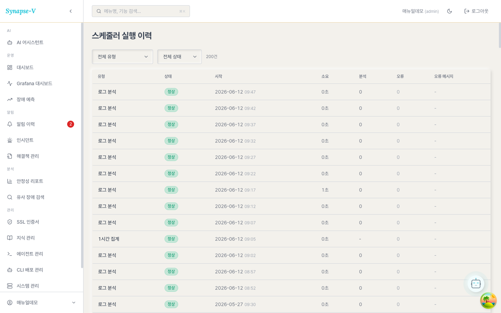
/admin/scheduler-runs) — 유형·상태 필터, 시작 시각, 소요 시간, 분석 건수, 오류 건수, 오류 메시지.리포트가 안 만들어지거나 로그 분석 알림이 뜸할 때 여기서 상태: 오류로 걸러 오류 메시지를 확인합니다. 오류 줄은 왼쪽에 빨간 선이 표시됩니다.
벡터 상태
검색 자산이 저장되는 벡터 DB(Qdrant)의 주요 컬렉션 상태와 집계 작업 현황입니다.
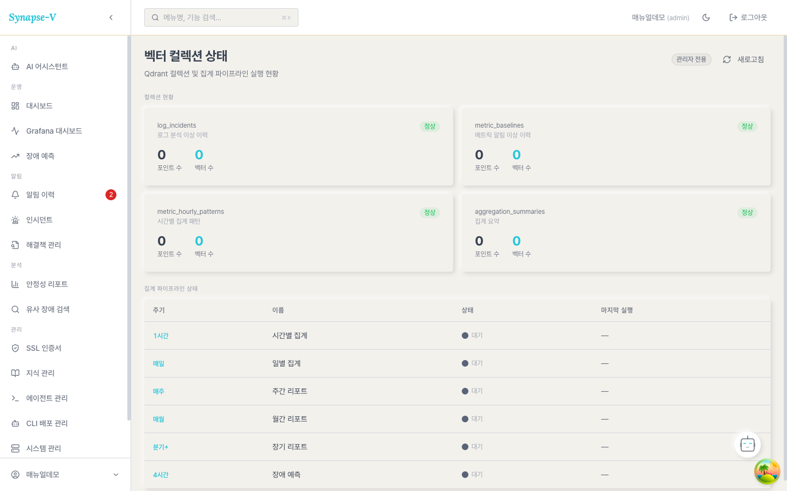
/vector-health) — 컬렉션 카드 4개(정상/주의/오류/미생성, 포인트 수)와 집계 파이프라인 표(실행 중/오류/정상/대기).- 로그 분석 이력(
log_incidents), 메트릭 알림 이력(metric_baselines), 시간별 패턴(metric_hourly_patterns), 집계 요약(aggregation_summaries) 4개를 보여 줍니다. - 유사 장애 검색 결과가 전혀 안 나오면 여기서 해당 컬렉션의 포인트 수가 0인지, 상태가 오류인지 확인합니다.
- 이 화면에 없는 해결책·지식 컬렉션은 해결책 검색과 AI 어시스턴트로 동작을 확인하십시오.
OAuth 클라이언트
다른 사내 시스템이 "Synapse 계정으로 로그인"(SSO)을 쓰도록 등록합니다.
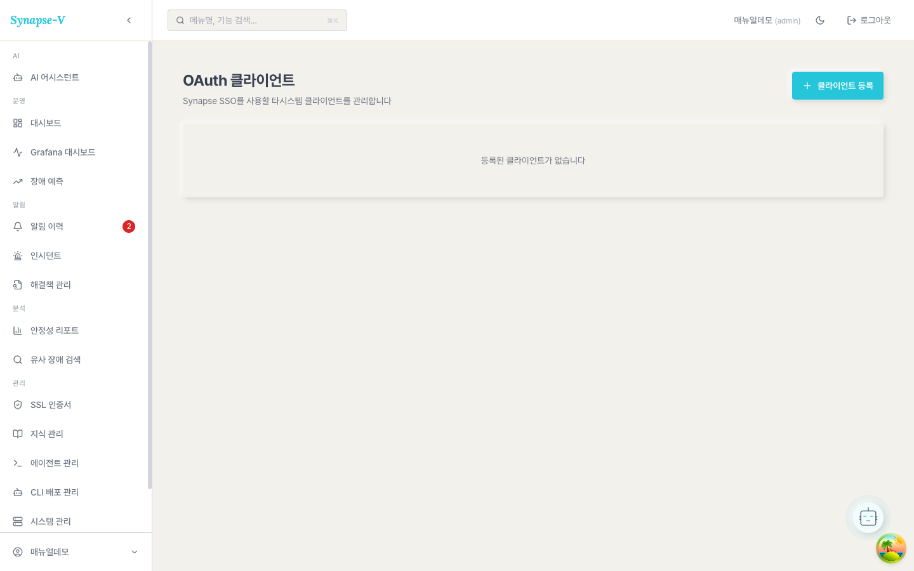
/admin/oauth-clients) — 시스템 이름, Client ID, Redirect URI, 상태, 등록일.- 클라이언트 등록 → 시스템 이름 입력.
- Redirect URI를 입력하고
Enter또는 추가. 여러 개 넣을 수 있습니다. - 등록을 누르면
client_id와client_secret이 나옵니다.
창을 닫으면 다시 볼 수 없습니다. 복사 버튼으로 복사해 상대 시스템 담당자에게 안전한 경로로 전달하십시오. 잃어버리면 비활성화하고 새로 등록해야 합니다.
- 상대 시스템이 보내는 redirect_uri는 등록한 값과 글자 하나까지 같아야 합니다.
- 비활성화는 되지만 다시 활성화하거나 삭제하는 버튼은 없습니다.
- 이 메뉴는 메뉴 검색(
Ctrl+K)에 나오지 않습니다.
업무 시나리오 — 장애 한 건 처리하기
결제 시스템에서 DB 커넥션 풀이 고갈된 상황을 예로, 알림이 온 순간부터 해결책이 검색 자산이 되기까지 따라가 봅니다.
- Teams 알림을 받는다담당자에게 Teams 카드가 옵니다. 인시던트 보기를 누르면 인시던트 상세가 열립니다. 동시에 Synapse-V 위쪽에 빨간 Critical 배너가 뜹니다.
- 상황을 파악한다대시보드에서 결제 시스템이 위험인지, 다른 시스템도 영향받는지 봅니다. 시스템 상세의 활성 이슈와 수집 현황 차트로 언제부터 나빠졌는지 확인합니다. (04·05장)
- 인시던트를 확인 처리한다인시던트 상세에서 확인을 눌러 "내가 보고 있다"를 알립니다. MTTA가 기록됩니다. (10장)
- AI에게 먼저 물어본다✨ 챗봇으로 자동 분석을 누르면 비슷한 과거 사례와 권장 조치가 나옵니다. 해결책 관리에서 "커넥션 풀 고갈"로 검색해도 됩니다. (03·11장)
- 원인을 조사하며 기록한다원인 파악 중으로 바꾸고, 확인한 내용을 타임라인 메모로 남깁니다. 교대 근무자도 바로 이어받을 수 있습니다.
- 조치하고 해결 처리한다편집 → DevX 분석으로 근본 원인·조치 내용·사후 분석 초안을 받고 다듬어 저장합니다. 해결 처리를 누르면 MTTR이 기록됩니다. 요약 보고서로 보고문을 복사해 보고합니다.
- 해결책을 등록한다해결책 등록 → 장애 유형, 해결 내용, 승인자 지정, 조치 화면 캡처 첨부 → 등록. 승인자에게 Teams 요청이 갑니다. (11장)
- 승인 → 검색 자산승인되면 해결책이 벡터 DB에 저장됩니다. 다음에 비슷한 알림이 오면 AI 어시스턴트와 해결책 검색이 이 기록을 찾아 줍니다.
- 종료하고 재발을 막는다종료 처리. 오탐이었던 알림이 섞여 있었다면 알림 이력에서 메트릭 예외 처리나 로그 심각도 변경으로 다음 오탐을 막습니다. (08장)
알아둘 제약 · 자주 묻는 질문
현재 버전에서 사용자가 헷갈리기 쉬운 동작을 모았습니다.
현재 버전의 제약
| 상황 | 현재 동작 · 우회 방법 |
|---|---|
| 운영자 권한의 해결책 승인자가 Teams 링크를 누름 | 검토 화면이 관리자 전용이라 대시보드로 돌아갑니다. 관리자에게 승인을 요청합니다. |
| 리포트 발송 이력 화면을 찾을 수 없음 | 메뉴 링크가 없습니다. 주소창에 /reports/history를 입력합니다. |
| 등록한 메트릭 예외를 보거나 해제하고 싶음 | 화면이 없습니다. 등록할 때 자동 만료를 지정하고, 급하면 시스템 관리자에게 요청합니다. |
| 에이전트 서버 IP·경로를 바꾸고 싶음 | 수정 화면이 없습니다. 삭제 후 다시 등록합니다. |
| 대시보드 알림 카드와 알림 이력 건수가 다름 | 카드는 최근 10분, 알림 이력은 기간 없는 미확인 전체라서 다릅니다(정상). |
| 가입 때와 프로필 변경 때 비밀번호 규칙이 다름 | 가입: 대문자+숫자 12자 이상 / 변경: 영문+숫자+특수문자 8자 이상. 둘 다 만족하는 비밀번호를 쓰면 편합니다. |
| OAuth 클라이언트를 다시 켜거나 지우고 싶음 | 비활성화만 됩니다. 새로 등록합니다. |
| 챗봇 도구 관리·OAuth 클라이언트가 메뉴 검색에 안 나옴 | 계정 메뉴에서 들어갑니다. |
자주 묻는 질문
알림이 왔는데 인시던트가 두 개로 나뉘었어요.
같은 시스템이라도 첫 인시던트가 감지된 지 30분이 지났거나, 이미 해결됨·종료로 바뀐 뒤에 온 알림은 새 인시던트가 됩니다.
같은 로그 알림이 계속 옵니다. 장애가 아닌데요.
알림 이력에서 그 로그 알림을 골라 로그 심각도 변경 → 정보 (알림 제외)를 하면 이후 비슷한 로그는 알림 없이 넘어갑니다. 인시던트 심각도를 Info로 바꿔도 같은 효과가 있습니다.
메트릭 알림이 임계치 근처에서 계속 울렸다 꺼졌다 합니다.
메트릭 예외 처리에서 임계치 오버라이드에 조금 높은 값을 넣으면 그 값 이하는 무시합니다. 완전히 막는 것보다 안전합니다.
해결책 등록 버튼이 안 보여요.
인시던트가 해결됨 또는 종료 상태일 때만 등록할 수 있습니다. 먼저 해결 처리를 하십시오.
AI 어시스턴트가 우리 시스템 이야기를 못 알아들어요.
위쪽 지식 검색 대상에 그 시스템이 선택되어 있는지 확인하십시오. 선택되지 않은 시스템의 문서·장애 이력은 검색하지 않습니다. 질문에 시스템 이름을 넣으면 더 정확합니다.
대시보드 그래프가 비어 있어요.
에이전트 관리에서 해당 시스템 에이전트가 수집 중인지 확인하십시오. 수집 중단이면 에이전트 상세에서 상태 갱신 → 재시작을 시도합니다(SSH 세션 필요).
화면이 이상하게 보여요.
브라우저를 새로고침(Ctrl+Shift+R)해 보십시오. 그래도 같으면 테마를 바꿔 보고, 계속되면 화면 캡처와 함께 시스템 관리자에게 알립니다.
용어집
화면에 나오는 줄임말과 용어를 풀었습니다.
| 용어 | 뜻 |
|---|---|
| 인시던트 | 장애 사건 한 건. 관련 알림 여러 개를 묶어 상태를 추적합니다. |
| MTTA | Mean Time To Acknowledge. 감지부터 누군가 확인하기까지 걸린 시간. |
| MTTR | Mean Time To Resolve. 감지부터 해결까지 걸린 시간. |
| 해결책 · 사후분석 | 해결한 사건의 조치 내용. 승인되면 검색 자산이 됩니다. |
| 감리 | 등록된 해결책을 검토해 승인·반려하는 일. |
| 에이전트 · 수집기 | 서버에서 메트릭·로그를 모아 보내는 프로그램. |
| instance_role | 같은 시스템 안의 서버 구분 이름(was1, was2, db-primary 등). |
| OTel · Trace | OpenTelemetry. WAS 요청 하나가 어떤 단계를 거쳤는지 기록한 추적 정보. |
| 임계치 오버라이드 | 메트릭 예외에서 알림 기준값을 시스템 기본값 대신 따로 정하는 것. |
| 이상 유형 | 알림이 과거와 비교해 신규/유사/반복/중복/알림성 중 무엇인지 매긴 값. |
| 알림성 | 에러처럼 보이지만 장애가 아닌 로그. 알림에서 빠집니다. |
| 벡터 검색 · 유사도 | 글자가 아니라 뜻이 비슷한 기록을 찾는 검색. 유사도는 얼마나 비슷한지를 %로 나타낸 값. |
| Qdrant | 검색 자산(과거 장애, 해결책, 패턴)을 저장하는 벡터 DB. |
| RAG | AI가 답하기 전에 관련 문서·이력을 먼저 검색해 근거로 삼는 방식. |
| DevX · AgentCode | 사내 LLM 서비스와, 업무 영역별로 발급받은 호출 코드. |
| Executor | 챗봇 도구 묶음. 도구를 실제로 실행하는 연결 대상(EMS, Prometheus 등). |
| OCR | 이미지·PDF 첨부에서 글자를 뽑아내는 처리. |
| SSO · OAuth | 한 계정으로 여러 시스템에 로그인하는 방식과 그 표준. |
| UPN | Teams 사용자 식별자. 보통 회사 이메일 주소와 같습니다. |
| SSH 세션 | 에이전트 설치·제어를 위해 서버에 잠깐 접속하는 연결. 5분간 유지됩니다. |
PDF로 보관하려면
브라우저에서 Ctrl+P(Mac은 ⌘+P) → 대상: PDF로 저장을 고르면 왼쪽 목록 없이 전 장이 순서대로 이어진 인쇄본이 만들어집니다.